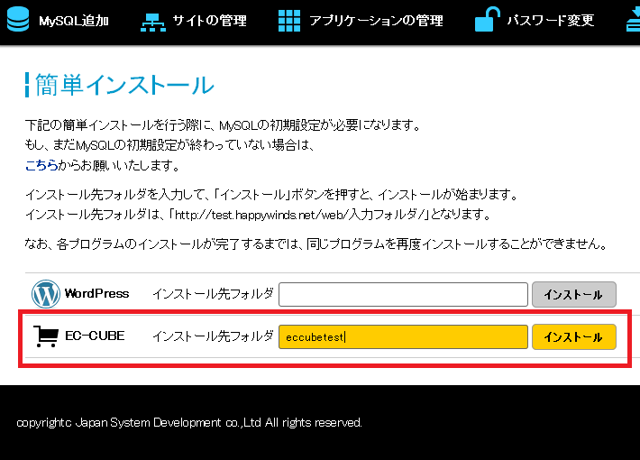
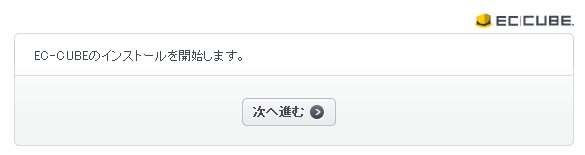
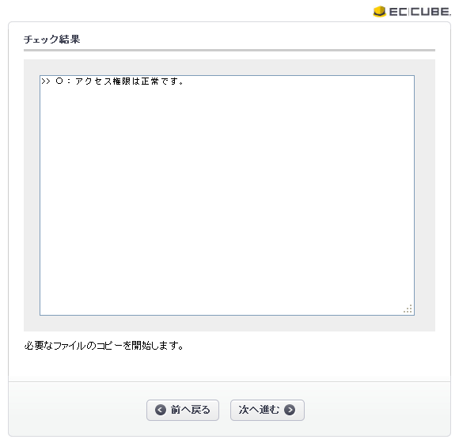
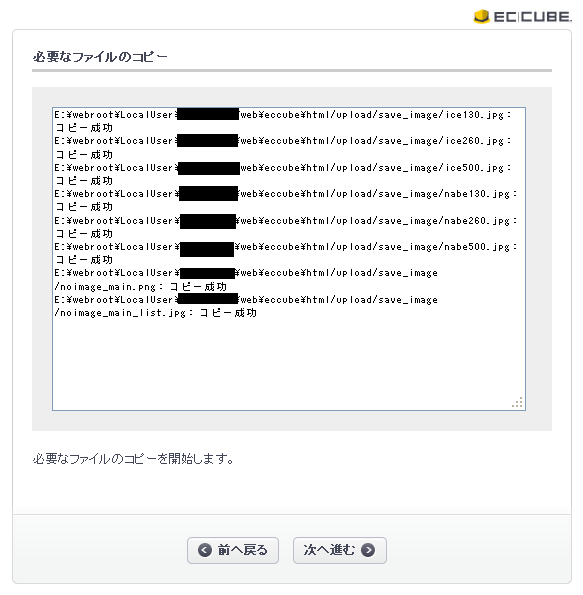
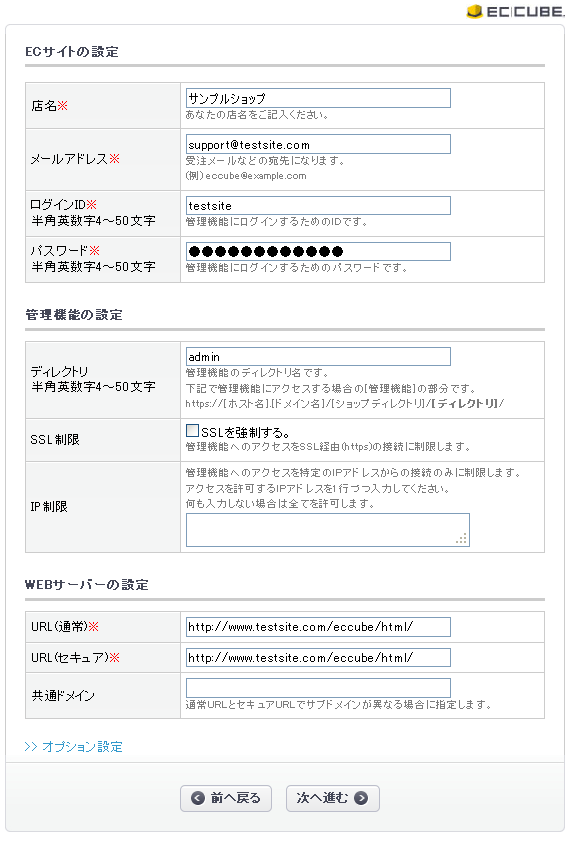
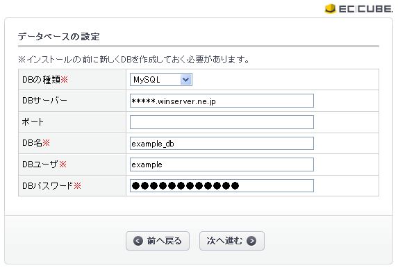
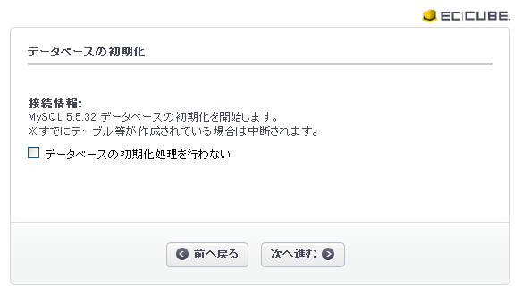
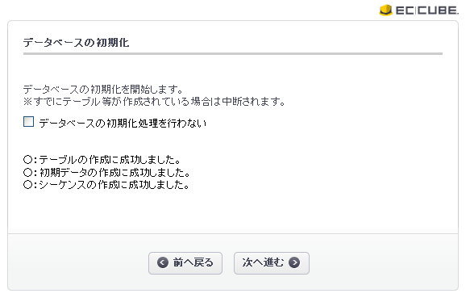
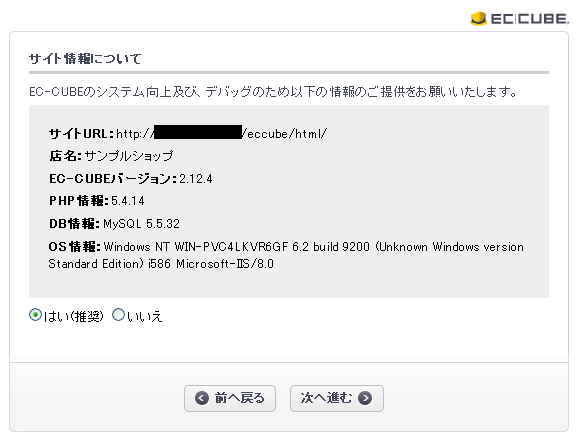
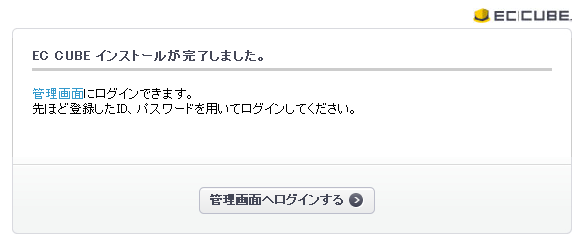

EC-CUBEをご利用いただく際には、あらかじめMySQLのデータベースを追加する必要がございます。
こちらで、あらかじめデータベースを作成して、その時に入力したデータと表示された情報を保存しておいてください。
コントロールパネルの簡単インストール機能でEC-CUBEを選択して、
インストールボタンを押されますと、5分以内にEC-CUBEがインストールされます。

5分程度お待ちいただきましたら、http://ご契約ドメイン/インストール先のフォルダ/html/にアクセスしてください。
トップページにアクセスすると、次のような画面が出ますので、「次へ進む」ボタンを押してください。

「次へ進む」ボタンを押してください。

「次へ進む」ボタンを押してください。

ECサイトの情報ご入力いただき、「次へ進む」ボタンを押してください。

あらかじめご登録いただいておりましたデータベース（MySQL）の情報をご記入ください。
ポートの欄は記入しないでください。

「次へ進む」ボタンを押してください。
もし、すでにデータベースをご利用いただいている場合は、「データベースの初期化処理を行わない」にチェックを入れてください。

「次へ進む」ボタンを押してください。

EC-CUBEの情報を提供するか否かについてご回答いただき、「次へ進む」をクリックしてください。

EC-CUBEのインストールは完了となります。
